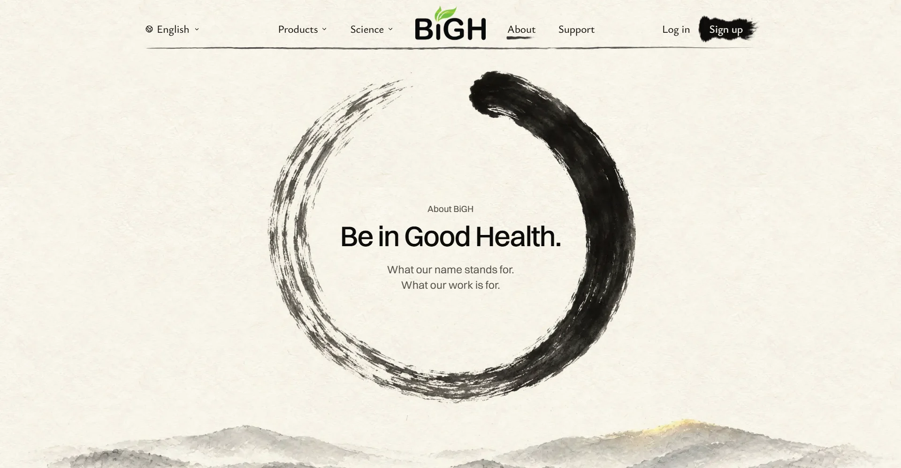
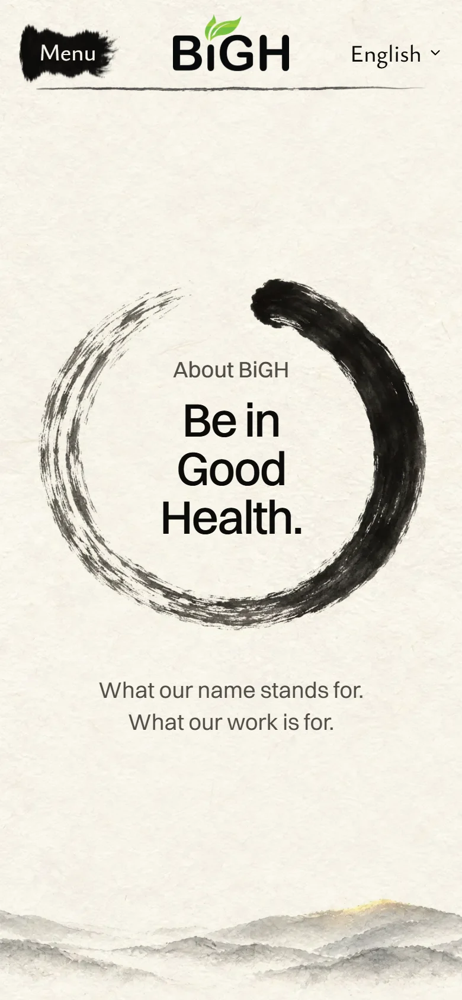
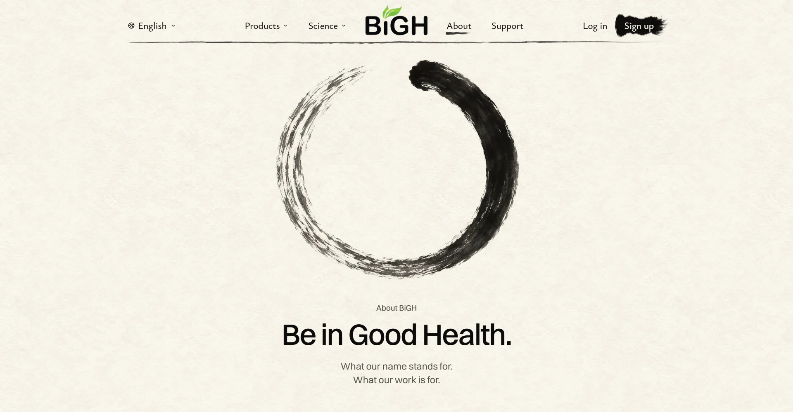
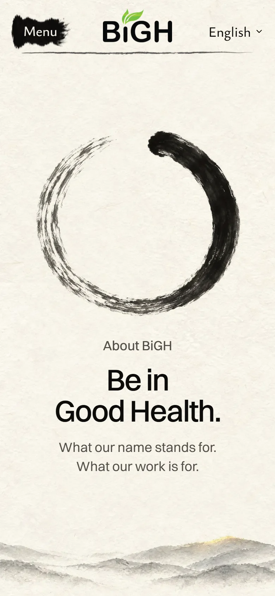

Both versions were built for real on the site, with no gold leaf. These pictures and films
come from the real built pages. Mo picked A on October 26; B has been removed. Nothing is
live yet.
Picked: A
A Words inside the circle Picked
The circle fills the first screen and frames the title. On your big screen it is 2.5 times
today's size. On a phone the title sits inside on three short lines.

Big screen

Phone
Film: laptop, 9 secondsFilm: phone
My score: 8.5 out of 10. It feels like stepping into the painting, and the hills still peek
in at the bottom. What holds it back: on a small laptop the title shrinks a little to fit
inside.
B Bigger, words below Not picked
Today's layout, as big as it can be while the words still fit on the first screen. On your
big screen it is almost twice today's size.

Big screen

Phone
Film: laptop, 9 secondsFilm: phone
My score: 8 out of 10. Clean and safe. What holds it back: on a small laptop screen it is
only a little bigger than today, because the words need room underneath.